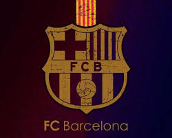

A klub története

A klub megalapítása a Hans Gamper nevéhez fűződik, akinek katalán beceneve Joan volt. Gamper 1899. október 22-én hirdetést adott fel a helyi sportmagazinban, egy barcelonai székhelyű labdarúgócsapat létrehozásának céljával. 1899. november 29-én Gamper elnökletével Gimnas Soléban került sor az egyesület első gyűlésére. Az összejövetelen résztvevők névsora a következő volt: Hans Gamper, Gualteri Wild, Lluis d'Ossó, Bartomeu Terradas, Otto Kunzle, Otto Maier, Enric Ducal, Pere Cabot, Carles Pujol, Josep Llobet, John Parsons és William Parsons. A gyűlés határozata alapján megalakult a klub, melynek első elnöke Gualteri Wild lett, aki feladatai mellett játékosként is szerepet vállalt a csapat munkájában.
Érdekességek
Az FC Barcelona Spanyolország Katalónia tartományának labdarúgócsapata. A klub a spanyol labdarúgó-bajnokság kezdetétől megszakítás nélkül részt vesz az első osztály bajnoki küzdelmeiben. Az egyesületet 1899. november 29-én alapította a svájci Hans Gamper. Az FC Barcelona előbb a katalán regionális bajnokságban és a spanyol labdarúgókupában, később pedig az 1928-ban megalakított egységes spanyol labdarúgó-bajnokságban és a nemzetközi kupákban vált a spanyol, valamint a nemzetközi labdarúgás egyik legmeghatározóbb egyesületévé.z A klub jelentősebb eredményeit tekintve a spanyol labdarúgó-bajnokság első osztályát 26, a spanyol labdarúgókupát 30, a spanyol labdarúgó-szuperkupát 13, az UEFA-bajnokok ligáját és elődjét öt, az UEFA-kupa elődjét három, a kupagyőztesek Európa-kupáját négy, az UEFA-szuperkupát pedig öt alkalommal nyerte meg a csapat. Ezenkívül számos kisebb spanyol és katalán trófeát tudhat magáénak a klub.
